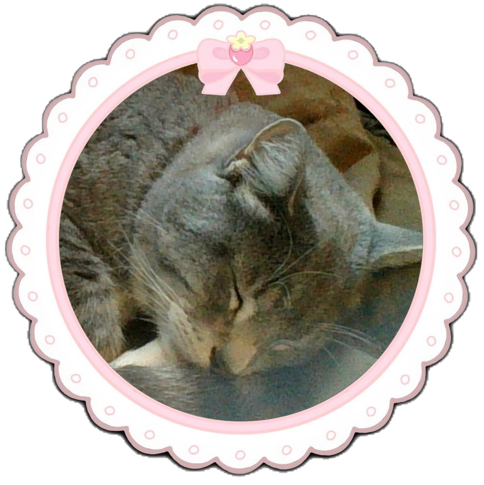
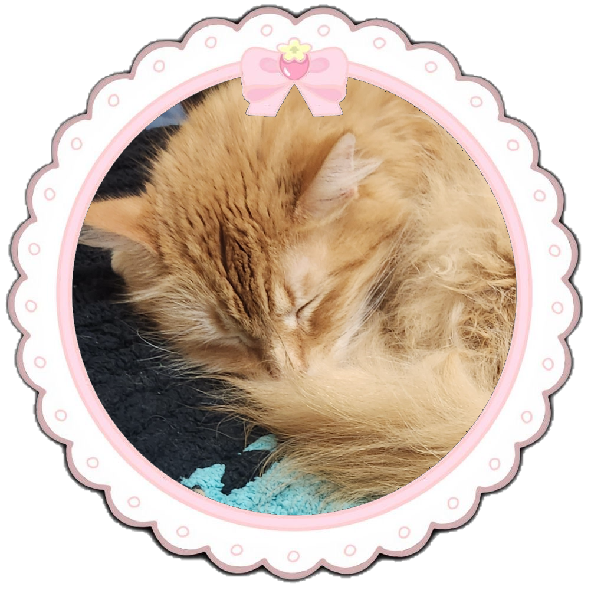
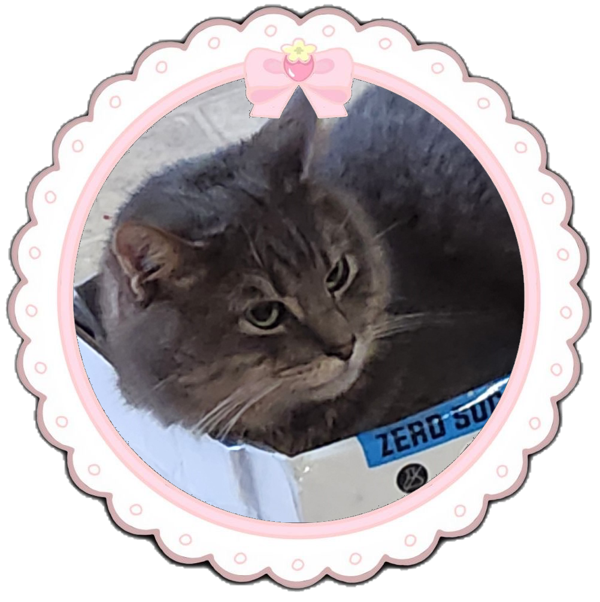
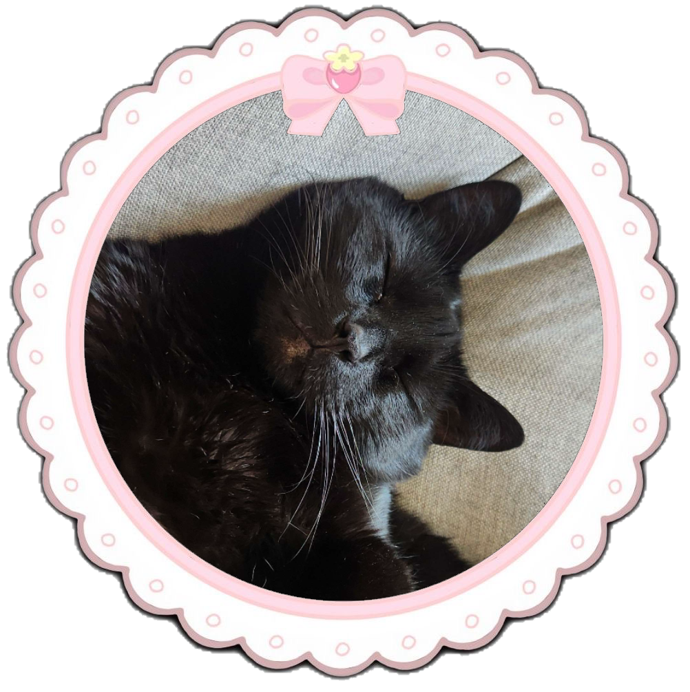
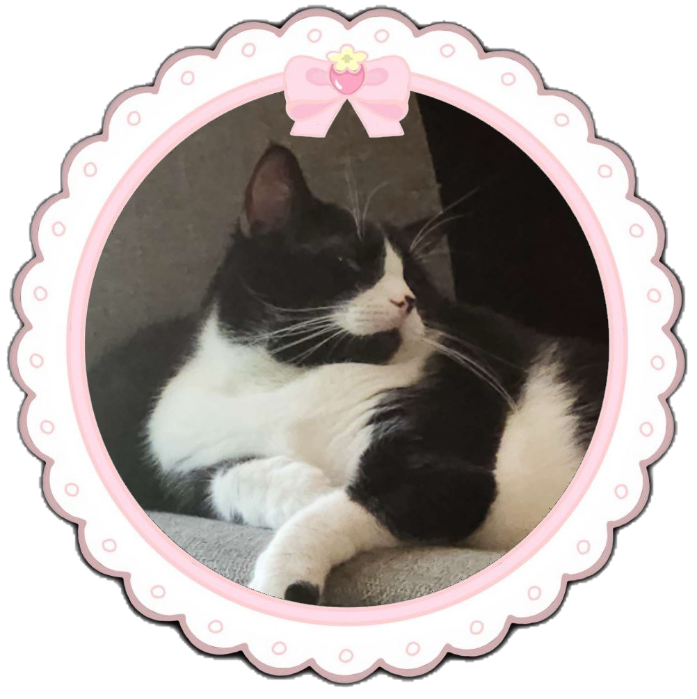
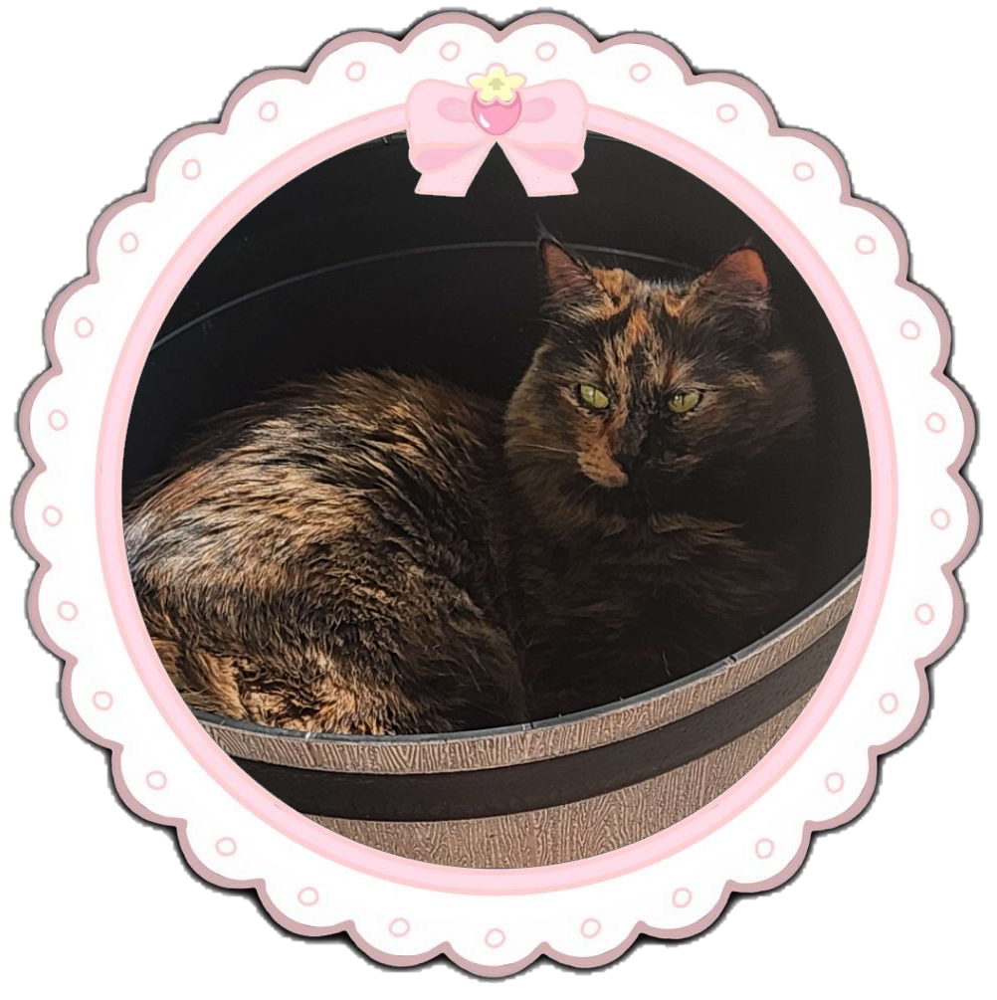
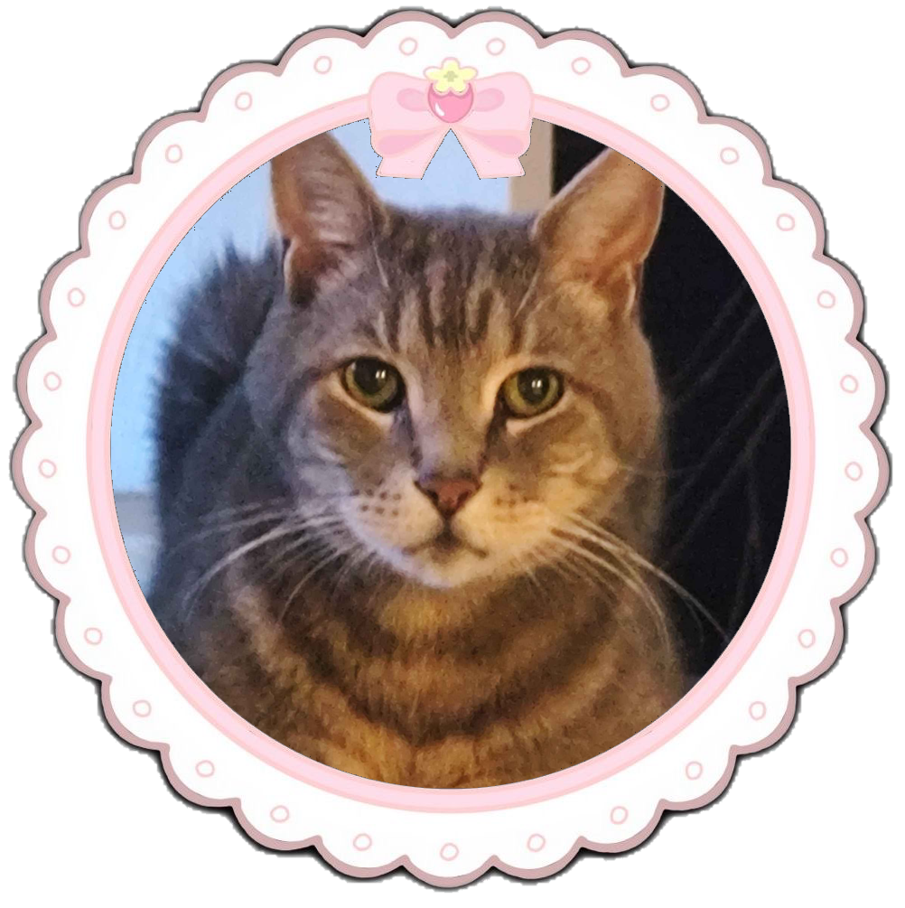
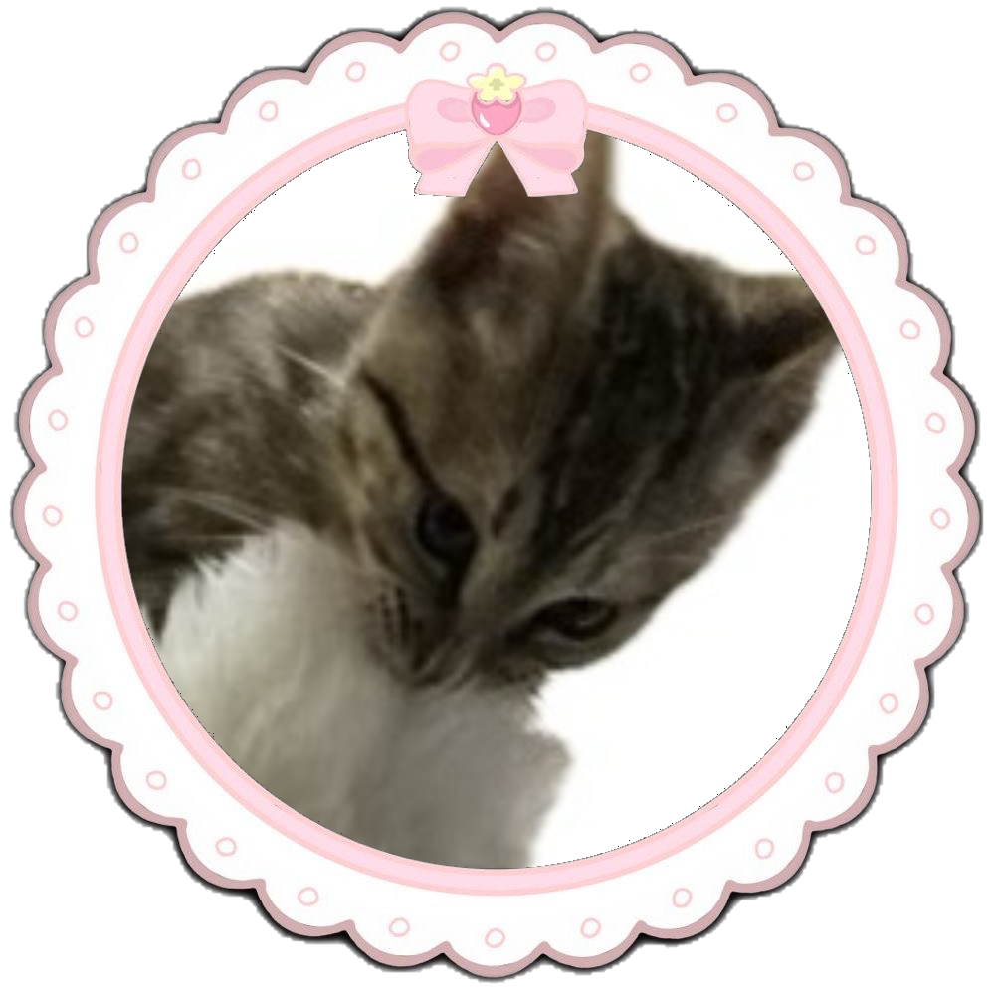

Link
Link was my biggest baby! Him and I were super close.
He helped me cope through a really tough time. He liked
to dead stare at my sister which would freak her out,
which
I thought it was funny. He loved to be outside and had
a favorite bush to lay under and nap. There were times
he hunted some pigeons even though he wasn't supposed
to and he got in serious trouble. Smh. I'd do anything
for him. I miss him, but I know he's sleeping under his
favorite bush now in the afterlife. 

Bongi
Bongi was definetly and Orange cat in his younger days.
He was the definition of being strong but no brains.
I remember when he was baby he had super triangle tail.
We got him from a bush where we lured him out with milk,
I remember the poor guy was covered in goatheads that I
had to take out of his fur while he was calmed down
with food. In his older days he liked to take naps on the
balcony, and enjoyed when we would take him outside as a
treat. He loved eating grass and lunchmeat turkey.
I miss when he would sit on the computer desk with me
while I was coding. He loved my husband more than me
though! lol!

Soot
Mr.soot/Sephiroth/fatboi/chicharon ear, my husband saved off the highway. He was a lil kitten and I guess someone threw him out of a moving truck onto the highway.
My husband was doing Uber and saw this and went to get him,
poor kitty was about to jump off the highway in fear. He
managed to save him and got super clawed on the way. I don't
remember much from this time but I do remember my sister raised
him from there and earned his trust. Now he avoids my husband
cause he associates him with his trauma. lol. His first human
food was hot dogs and now he loves them. He loves to eat and
has gotten super big.

Beerus
I got Beerus for my birthday while I was pregnant with my
second. He's super clingy and a super sweet boy. He's kinda
weird though, he doesn't like human food. But don't let him
fool you, he liked eating my ramen when he was a kitten. He's
the one who isn't that interested in food, he's always next
to me in one way or another. Lately he likes to surprise attack
me. And when anyone gets home, you have to give him a long
pet session. He's very attached to his rituals.

Oreo
Oreo...This lil man. Omg...He's insane. He's off the walls hyper. If
you leave a drink around, he WILL knock it over. He always has the zoomies if
he's awake. He also loooooves food. I can't eat or drink anything without him
checking it and having a taste (or more). Don't worry, I'm always checking to see
if the food or drink is safe for him. He likes for you to hold him while he
cuddles. He also loves people. When people are over he doesn't hide, and instead
forces them to cuddle and pet him. He's a butt but I love him.

Midna
Ms.Midna girl is the newest addition to the fam. We found her in the forest when
I was visiting my inlaws, no one claimed her even though we went to ask around,
so we took her home. Poor girl I even remember it was raining and everything, she was
so small too. She's super sweet, way sweeter
than the others. But she can defend herself is she needs to. She isn't scared to
smack soot when he's being a bully. She looooves sink water, I have to turn it on
for her when I wake up, and before I go to bed. When she comes up to you, she
will like headbutt you super hard its kinda funny, I can always tell when its
her.
These next two are my sister's.

Inupapa
Inupapita we've had since we were little, we had gotten him from my mom's friend
back in the day. She claimed they had found the poor little guy in the desert alone.
I remember him as the most timid one. When we got soot though, soot of course bullied
him cause he wanted my sister for his own. Smh.. But no papa bullies my sister for food
now that he didn't have any other cats. (Until fingie) He's also getting a lil chunky.
He's super cute old man.

Fingie
From what I hear this girl is a terror. She was found in a parking lot. She must've stolen
a car gta style or something. Anyways, she really likes socks, and to bully papa. She drives
my sister crazy with how hyper she is. She's super cute though.
These are my kitties that I've met throughout my life that were either strays, or I was too young to remember them very well as pets.
Bisco
Bisco was a stray at the house we grew up in. He was suprisingly chunky, and loved
to eat. He loved cuddles and would knead on you. He also LOVED to plop down, I loved it.
He was white with yellow marks. And he had blue eyes and was cross eyed.
I hope he's doing well, we had to leave the house suddenly and my husband had to give him
over to a shelter.
Loki
I remember my inlaws got this orange cat and named him loki a little
before I moved the first time. I don't remember much, I just remember he
was super sweet and would drool like crazy when you pet him. I miss him,
I hope he's okay wherever he is.
Cuddlebug
I met Cuddlebug while I was pregnant with my first. She was black with a white belly. Oh my god, she was soooo
sweet. I loved her. I couldn't take her in since I was living with my inlaws and they had a no cat rule.
I found a good shelter at this town and they took her in. They were lovely people.
Guerro
Guerro was my baby when I was really young, I had him before Link. He used to knead
in my hair. He was also an orange boy just like boloni, just a bit of a lighter
shade. We were so close, but my parents made me get rid of him. I'm sure he's
passed by now, I hope I get to see him again when I pass too.
Princess
Princess was the first cat I ever had. I remember being super little and
wishing on a star for her and my parents got me her the next day. I was
super little so I don't remember much but she liked to go outside alot.
She was a longhair with white and brown, and blue eyes. I remember she was super pretty.
I think because of this I remember something happening and her passing away.
Shadow
I was a bit older here than when I got Princess. I remember I was playing the
Spirit Temple and my mom called me over and we went to my neighbors. We ended up
picking up a little black kitten from her. I named him Shadow. I really don't remember much from here
but again, something happened and we lost him.
Tigre
I was waaaay to young to remember Tigre. He was my mom's cat when I was a baby/toddler
I remember being told that he HATED me though, which I don't blame the guy, I just came
in and took his spot as baby. I used to eat his cat food, and he would scratch me all the
time. Lmaoo